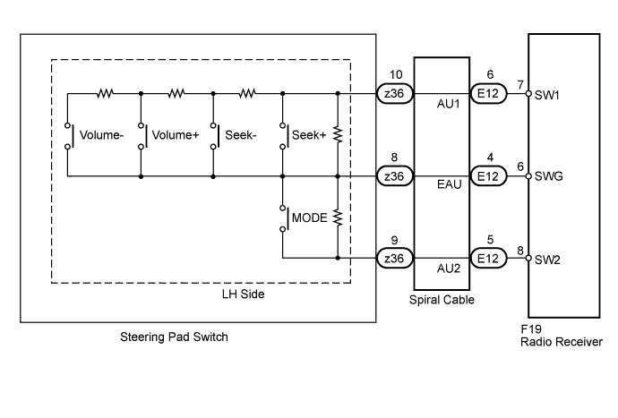
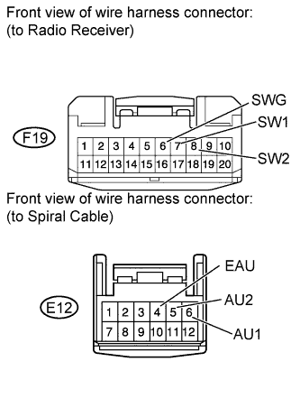
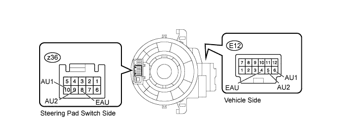
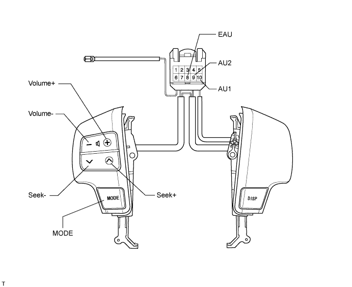

AUDIO AND VISUAL SYSTEM (w/o Multi-display) > Steering Pad Switch Circuit |

| 1.CHECK HARNESS AND CONNECTOR (RADIO RECEIVER - SPIRAL CABLE) |
 |
Disconnect the F19 receiver connector.
Disconnect the E12 cable connector.
Measure the resistance according to the value(s) in the table below.
| Tester Connection | Condition | Specified Condition |
| F19-8 (SW2) - E12-5 (AU2) | Always | Below 1 Ω |
| F19-6 (SWG) - E12-4 (EAU) | Always | Below 1 Ω |
| F19-7 (SW1) - E12-6 (AU1) | Always | Below 1 Ω |
| F19-8 (SW2) - Body ground | Always | 10 kΩ or higher |
| F19-6 (SWG) - Body ground | Always | 10 kΩ or higher |
| F19-7 (SW1) - Body ground | Always | 10 kΩ or higher |
|
| ||||
| OK | |
| 2.INSPECT SPIRAL CABLE SUB-ASSEMBLY |

Disconnect the cable connectors.
Measure the resistance according to the value(s) in the table below.
| Tester Connection | Spiral Cable Position | Specified Condition |
| E12-4 (EAU) - z36-8 (EAU) | 2.5 rotations to the left | Below 3 Ω |
| Center | ||
| 2.5 rotations to the right | ||
| E12-5 (AU2) - z36-9 (AU2) | 2.5 rotations to the left | Below 3 Ω |
| Center | ||
| 2.5 rotations to the right | ||
| E12-6 (AU1) - z36-10 (AU1) | 2.5 rotations to the left | Below 3 Ω |
| Center | ||
| 2.5 rotations to the right |
|
| ||||
| OK | |
| 3.INSPECT STEERING PAD SWITCH ASSEMBLY |
Disconnect the z35 switch connector.

Measure the resistance according to the value(s) in the table below.
| Tester Connection | Switch Condition | Specified Condition |
| 10 (AU1) - 8 (EAU) | No switch is pushed | 100 kΩ |
| 10 (AU1) - 8 (EAU) | Seek+ switch pushed | Below 2.5 Ω |
| 10 (AU1) - 8 (EAU) | Seek- switch pushed | 329 Ω |
| 10 (AU1) - 8 (EAU) | Volume+ switch pushed | 1000 Ω |
| 10 (AU1) - 8 (EAU) | Volume- switch pushed | 3110 Ω |
| 9 (AU2) - 8 (EAU) | No switch is pushed | 100 kΩ |
| 9 (AU2) - 8 (EAU) | MODE switch pushed | Below 2.5 Ω |
|
| ||||
| OK | ||
| ||